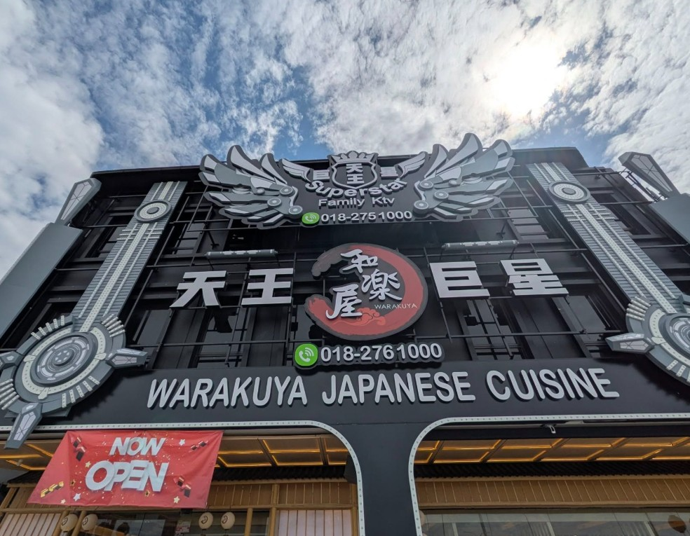

The times below are flexible. For a group of 10, allow an extra 15–20 minutes for parking, toilets and regrouping. เวลาต่อไปนี้สามารถปรับได้ สำหรับกลุ่ม 10 คน ควรเผื่อเวลาเพิ่ม 15–20 นาทีสำหรับจอดรถ เข้าห้องน้ำ และรวมกลุ่ม
Friday · Arrival วันศุกร์ · เดินทางมาถึง
7 Aug7 ส.ค.
Drive in, check in and settle down เดินทางเข้ามา เช็กอิน และพักผ่อน
Keep the evening light. Confirm Saturday’s farm plan and split passengers between the two cars. ช่วงเย็นพักผ่อนตามสบาย ยืนยันแผนไปฟาร์มในวันเสาร์ และแบ่งผู้โดยสารระหว่างรถสองคัน
Saturday · Farms & Eco Botanic วันเสาร์ · ฟาร์มและอีโคโบทานิก
8 Aug8 ส.ค.

Gentle Farms Gentle Farms
Family farm visit and animal feeding. Weekend opening is currently listed as 9 AM–5 PM; the free-and-easy tour is available for walk-ins during opening hours. เยี่ยมชมฟาร์มสำหรับครอบครัวและให้อาหารสัตว์ ปัจจุบันระบุว่าเปิดวันหยุดสุดสัปดาห์เวลา 9:00–17:00 น. และสามารถเข้าชมแบบอิสระได้ในช่วงเวลาเปิดทำการ
Family notes คำแนะนำสำหรับครอบครัว
- Optional – Wear covered shoes.แนะนำให้สวมรองเท้าหุ้มส้น (ไม่บังคับ)
- Bring water, hats and insect repellent.นำน้ำดื่ม หมวก และยากันแมลง
- Check the weather before leaving.ตรวจสอบสภาพอากาศก่อนออกเดินทาง

Lunch at Warakuya – Eco Botanic รับประทานอาหารกลางวันที่ Warakuya – Eco Botanic
Japanese lunch at Warakuya in the Eco Botanic area before continuing to Eco Galleria. รับประทานอาหารญี่ปุ่นที่ Warakuya ในย่าน Eco Botanic ก่อนเดินทางต่อไปยัง Eco Galleria
Eco Galleria Eco Galleria
Easy afternoon for cafés, shopping and an air-conditioned break after the farm. ช่วงบ่ายสบาย ๆ สำหรับคาเฟ่ ช้อปปิ้ง และพักในห้องปรับอากาศหลังจากเที่ยวฟาร์ม
Sunday · Capybaras & City Mall วันอาทิตย์ · คาปิบาราและห้างในเมือง
9 Aug9 ส.ค.
.JPG?width=1200)
Capyba Pet Farm Capyba Pet Farm
Interactive animal visit featuring capybaras and other animals. Reconfirm current admission arrangements and opening time before setting off. เยี่ยมชมและทำกิจกรรมกับคาปิบาราและสัตว์ชนิดอื่น โปรดยืนยันวิธีเข้าชมและเวลาเปิดล่าสุดก่อนออกเดินทาง
Family notes คำแนะนำสำหรับครอบครัว
- Supervise hand-feeding closely.ดูแลเด็กอย่างใกล้ชิดขณะให้อาหารสัตว์
- Wash hands before snacks or lunch.ล้างมือก่อนรับประทานของว่างหรืออาหารกลางวัน
- A shorter visit may suit the 4-year-old.เด็กอายุ 4 ปีอาจเหมาะกับการเข้าชมระยะเวลาสั้นกว่า
Lunch รับประทานอาหารกลางวัน
Eat near Sutera Utama or head toward central JB, depending on parking and the children’s energy. รับประทานอาหารใกล้ Sutera Utama หรือเดินทางเข้าตัวเมือง JB โดยพิจารณาจากที่จอดรถและพลังของเด็ก ๆ

SKS City Mall JBCC SKS City Mall JBCC
Indoor afternoon for shopping, food and rest. Current published hours are 10 AM–10 PM daily. ช่วงบ่ายในอาคารสำหรับช้อปปิ้ง รับประทานอาหาร และพักผ่อน เวลาที่ประกาศในปัจจุบันคือ 10:00–22:00 น. ทุกวัน
Monday · Easy Departure วันจันทร์ · เดินทางกลับแบบสบาย ๆ
10 Aug10 ส.ค.
Brunchอาหารมื้อสาย
Keep it near the accommodation to reduce backtracking. เลือกร้านใกล้ที่พักเพื่อลดการเดินทางย้อนกลับ
Supermarket stopแวะซูเปอร์มาร์เก็ต
Buy groceries and road snacks. Assign one adult to watch the kids while others shop. ซื้อของใช้และของว่างสำหรับเดินทาง ให้ผู้ใหญ่หนึ่งคนดูแลเด็กขณะที่คนอื่นซื้อของ
Car washล้างรถ
Find carwash nearby that looks safe. หาร้านล้างรถใกล้ๆ ที่ดูปลอดภัย
Drive back to Singapore ขับรถกลับสิงคโปร์
Check live checkpoint traffic before choosing the route and departure time. ตรวจสอบสภาพการจราจรที่ด่านแบบสดก่อนเลือกเส้นทางและเวลาออกเดินทาง
Group checklist รายการตรวจสอบของกลุ่ม
Trip notes บันทึกการเดินทาง
Your checkboxes and notes are saved in this browser. ช่องที่ทำเครื่องหมายและบันทึกจะถูกเก็บไว้ในเบราว์เซอร์นี้